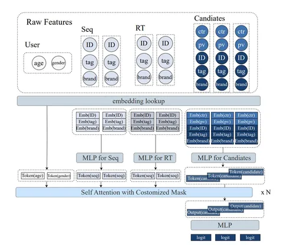

Сегодня разбираем недавнюю статью от Meituan, крупнейшего сервиса доставки в Китае. В ней предлагают архитектуру ранжирования MTGR, которая использует ручные кросс-фичи, но при этом обладает масштабируемостью генеративных моделей.
Авторы выделяют две проблемы:
1. В классических моделях Deep Learning Recommendation (DLRM) вычислительная сложность и инференс масштабируются линейно по числу кандидатов. Если хотим сделать модель тяжелее, втиснуть её в прод становится невозможно по latency.
2. Generative Recommendation Model (GRM) решает проблему масштабирования. Но чтобы это работало, приходится отказываться от кросс-фичей. Авторы показывают, что их удаление настолько просаживает качество, что никакое увеличение параметров это не компенсирует.
Чтобы обойти ограничения, пробуют токенизировать все входные признаки:
- Профиль пользователя (U) — набор токенов, где каждая фича — отдельный токен.
- Историю делят на долгосрочную (S) и краткосрочную (R). Её токенизируют на уровне событий: эмбеддинги фич одного события конкатенируются и прогоняются через MLP.
- Кандидатов (C) токенизируют аналогично, но в них замешивают важные кросс-признаки.
Затем идёт агрегация: вместо обработки пар «пользователь-кандидат» по отдельности, все кандидаты юзера объединяются в один пример. Полученные токены образуют последовательность U → S → R → C. За один forward-pass модель оценивает сразу всех кандидатов, давая сублинейное масштабирование.
Токены подают в модифицированный трансформер HSTU со следующими внедрениями:
- Group-Layer Normalization (GLN). Так как токены имеют разную семантику, нормализация делается независимо для каждой группы (U, S, R, C).
- Dynamic Masking. Кастомная маска защищает от утечки данных. Пользователь и долгая история (U+S) видны всем. Краткосрочная (R) — подчиняется каузальности. Кандидаты (C) видят только предшествующую часть R и не видят других кандидатов.
Над токенами кандидатов на выходе строится MLP для предсказания CTR и CVR.
Авторы применили оптимизации, которые увеличили пропускную способность в 1,6–2,4 раза в сравнении с TorchRec. Также им удалось получить x65 FLOPs на один пример без увеличения затрат на обучение в сравнении с DLRM.
Вместо статических таблиц внедрили динамические хэшированные эмбеддинги, которые позволяют выделять память для новых пользователей/айтемов в реальном времени без переполнения.
Размер батчей сделали динамическим. Семплы с длинной историей объединяются в батчи с меньшим числом семплов. Семплы с короткой историей — в батчи с большим числом семплов. Это даёт примерно одинаковую вычислительную нагрузку на все GPU.
Обучение проводили в bf16 mixed precision с префетчингом. Его разбивали на три потока: copy (загрузка данных), dispatch (lookup эмбеддингов), compute (forward/backward), что позволило перекрывать I/O-операции с вычислениями.
Эксперименты и результаты
Для обучения использовали внутренние логи Meituan, так как открытые датасеты слишком маленькие и в них нет нужных кросс-фичей. В качестве бейзлайнов взяли передовые DLRM-архитектуры: Wukong, UserTower, DNN, MoE, MultiEmbed. Качество оценивали по AUC и GAUC.
По сравнению с лучшим бейзлайном (UserTower-SIM) офлайн-метрики (CTR/CTCVR, AUC/GAUC) улучшились на 0,5–1,5%.
Проверка показала, что все компоненты архитектуры критичны. Отсутствие кросс-фичей просаживает качество сильнее всего — без них MTGR сразу проигрывает старым бейзлайнам. GroupLN и Dynamic Masking также дают значимый прирост в качестве.
Авторы продемонстрировали линейный прирост качества (CTCVR GAUC) от log(flops). Отдельно показали, что модель масштабируется по всем осям: можно наращивать как число слоёв, так и скрытую размерность или длину истории.
В онлайн-эксперименте MTGR даёт +1,9% CTR и +1,02% CTCVR в сравнении с лучшим DLRM-бейзлайном.
@RecSysChannel
Разбор подготовил
